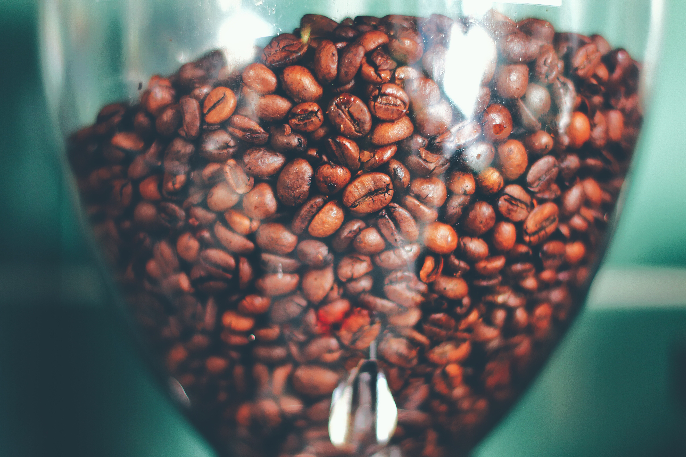

不同地区种植出来的咖啡具有不同的风味——一个国家特别的土壤、气候条件和种植方式使得该国出产的咖啡具有特别的风味。法国的酿酒大师把这种现象叫做“地域风格”。在地理概念上，全球性的咖啡种植区有三个——东非和阿拉伯半岛，东南亚和环太平洋地区，拉丁美洲。


最早期阿拉伯人食用咖啡的方式是将整颗果实咀嚼，以吸取其汁液。后来他们将磨碎的咖啡豆与动物的脂肪混合，来当成长途旅行的体力补充剂。到约公元1000年，绿色的咖啡豆才被拿来在滚水中煮沸成为芳香的饮料。又过了三个世纪，阿拉伯人开始烘焙及研磨咖啡豆，由于可兰经中严禁喝酒，使得阿拉伯人消费大量的咖啡，因而宗教在推动咖啡在当时阿拉伯世界乃至后世广泛流行的一个很大的因素。

咖啡行业迭代的主要因素是产品形态的变化，在适当经济与文化条件下催生需求端层级分化被供给端逐一满足。技术进步带来包装、烘焙与萃取工艺的改善，供给端的创新重点在于寻求流通低成本，口感高质化。高品质产品催生休闲需求，大幅提升咖啡增值空间，从农产品转变为休闲可选消费品，行业发展空间出现质变。

一杯优质的好咖啡，需要优质的咖啡豆来成就。从咖啡果到杯中的咖啡，需要一个复杂的加工过程。 咖啡豆：从咖啡果中剥离出咖啡豆。
烘焙：是为了培养咖啡豆的口味和香醇而进行的加工。出色的烘焙过程能够令咖啡豆完全挥发出它独特的口味和香气。 研磨：将经过烘焙的咖啡豆研磨成颗粒。


一杯好咖啡60%在豆子、30%在烘焙、10%在制作。一个环节是完整相互联系的、却又是相对独立的。烂豆子怎么烘的好怎么冲都不好，而好豆子不要冲的太糟糕都不会有问题。我平时也是直接拿热水壶浇豆子的。也不会太注意粉水比什么的。但我一样觉得好喝，所以有的时候不要去关注过程而是要关注你杯子里的东西好不好喝...


烘焙咖啡是一件让人激动的事情。我们把自己烘焙出来的咖啡叫作夏宝烘焙咖啡。但是，夏宝咖啡烘焙与别种咖啡的不同之处，不仅仅体现在它特别的颜色上，更多地体现在我们为使每一颗咖啡豆具有上佳口味而花费的心血上。夏宝烘焙的颜色可以模仿，但它特别的风味却是无法模仿的。